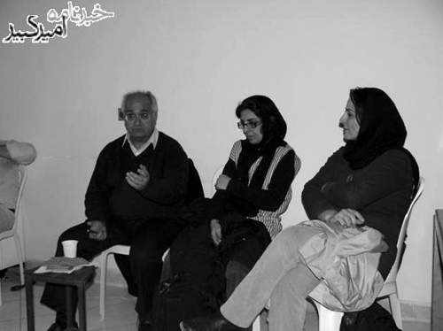

پذيرش > سایت نوشته ها > پروین اردلان: ستاره دار کردن روش همیشگی حکومت ها در طرد مخالفان بوده (...)
 سومین نشست دانشجویان محروم از تحصیل سومین نشست دانشجویان محروم از تحصیل

 پروین اردلان: ستاره دار کردن روش همیشگی حکومت ها در طرد مخالفان بوده است پروین اردلان: ستاره دار کردن روش همیشگی حکومت ها در طرد مخالفان بوده است
3 بهمن 1387 - خبرنامه امیرکبیر - نسخه قابل چاپ
سومین نشست دانشجویان محروم از تحصیل با فعالان سیاسی با میزبانی یک نویسنده و یک فعال حقوق زنان و در دفتر انجمن حامیان حق تحصیل برگزار شد. «بابک احمدی» و «پروین اردلان» دو مهمان این برنامه بودند که به مانند سایر مهمانان گذشته دانشجویان محروم از تحصیل به هم فکری و تحلیل چگونگی رخداد پروژه اینک گسترش یافته محرومیت از تحصیل پرداختند.
در ابتدا «زهرا جانی پور» عضو شورای دفاع از حق تحصیل و دانشجوی ستاره دار سال ۸۵ به عنوان مقدمه به تقسیم بندی محرومین از تحصیل اشاره کرد و گفت: «محرومین از تحصیل به سه گروه عمده تقسیم می شوند که گروه اول دانشجویان ستاره دار هستند که درکنکور کارشناسی ارشد پشت سد گزینش مانده اند و به تعبیر وزارت علوم صلاحیت عمومی شان برای ادامه تحصیل احراز نگشته است. گروه دوم دانشجویان تعلیقی هستند که احکام سنگین انضباطی دریافت نموده اند و به همین دلیل در آستانه اخراج آموزشی قرار گرفته اند و گروه سوم از اقلیت های مذهبی به خصوص بهاییان هستند که براساس اعمال سلیقه و قوانینی خاص در حال حاضر اساسأ حق ادامه تحصیل در مقطع آموزش عالی را ندارند.» وی با اشاره به غیر قانونی بودن اقدام دولت نهم در محروم کردن دانشجویان منتقد و مساله دانشجویان ستاره دار افزود: «این دانشجویان به استناد مصوبه ۸۶ مورخ ۴/۵/۱۳۶۷ شورای عالی انقلاب فرهنگی از تحصیل محروم گشته اند، که این مصوبه مصادیقی چون عناد، مبارزه مسلحانه با نظام جمهوری اسلامی ایران، داشتن وابستگی تشکیلاتی به گروههای محارب و… را ذکر نموده است با اطلاعاتی که در دست می باشد هیچ کدام از این دانشجویان در دادگاهی با این اتهامات محکوم نشده اند.»
به گزارش خبرنامه امیرکیبر، سپس «ضیاء نبوی» عضو دیگر شورای دفاع از حق تحصیل و ستاره دار سال جاری در شرحی از چگونگی وضعیت دانشجویان ستاره دار گفت: «اولین نهاد پیگیری کننده وضعیت دانشجویان محروم از تحصیل، کمیته پیگیری وضعیت دانشجویان ۳ ستاره بود که در سال ۸۵ تشکیل شد و در واقع بیشترین پیگیری ها هم در آن موقع صورت گرفت. دوم کمیته دفاع از حق تحصیل دفتر تحکیم وحدت بوده که در طی این ۳ سال پیگیر وضعیت این دانشجویان بوده است. انجمن حامیان حق تحصیل نیز امسال و توسط جمعی از فعالان سیاسی و مدنی بخصوص آقای کیوان صمیمی و با پشتیبانی کانون مدافعان حقوق بشر تاسیس شد و پیگیر وضعیت دانشجویان محروم از تحصیل می باشد و بالاخره شورای دفاع از حق تحصیل که از مجموعه ی دانشجویان محروم از تحصیل در سالهای اخیر اعم از ستاره دار، تعلیقی و بهائی شکل گرفته است.» نبوی به چرایی تشکیل شورای دفاع از حق تحصیل پرداخت و ادامه داد: « هدف ما از تشکیل شورای دفاع از حق تحصیل، تلاش برای پیگیری مستمر و جمعی مسئله محرومین از تحصیل است. مسئله دوم تأثیر مثبت چنین جمع هائی در تاثیر بر جامعه مدنی و کمک به پروژه دموکراسی خواهی در ایران است. مسئله دیگر کمک به بازتولید علائق انتقادی دانشجویان در بیرون دانشگاه و در نتیجه ناکام ماندن پروژه حاکمیت در منفعل نمودن این دانشجویان از طریق ممانعت از حضورشان در دانشگاه است. از سوئی جدای از این مسائل و نظر به عام بودن حق تحصیل، این خواسته می تواند به عنوان محوری برای ارتباط گروه ها و جریان های مختلف دانشجوئی و اتحاد عمل آنان حول یک خواست مشترک گردد.»
پس از شرحی مقدماتی که از سوی ۲ تن از دانشجویان محروم از تحصیل عنوان شد، بابک احمدی با یادآوری نخستین انتشار اخبار از پروژه ستاره دار کردن دانشجویان در سال ۸۵ سخنان خود را این گونه آغاز نمود که « در سال ۸۵ که مسئله دانشجویان سه ستاره پیش آمد، پیگیری ها و خبر رسانی ها خیلی بیشتر بود و به همین جهت جامعه روشنفکری و فضای عمومی جامعه نیز نسبت به این مساله واکنش جدیتری نشان داده بود ولی در سال بعد گویا پیگیری ها خیلی کمتر شد و به تبع حساسیت نسبت به قضیه محرومین از تحصیل هم کمتر شد، الان که خبر تشکیل شورائی برای پیگیری این مساله را می شنوم ،خیلی خوشحالم که این قضیه فراموش نشده است، چون که مسئله محرومین از تحصیل به جد از بزرگترین مصادیق نقض حقوق بشر در دولت نهم بوده است.» وی سپس از دیدگاه خود به تشریح چگونگی فعالیت های نهادهایی که به موضوع محرومیت از تحصیل مشغول اند اشاره کرد و گفت:« این فعالیتها باید به گونه ای باشد که دستاورد نیز به همراه داشته باشد. انتظار اینکه افراد بیایند و در فعالیتی که به هیچ نتیجه ی مثبتی منجر نمی شود مشارکت کنند، انتظاری غیر منطقی است. نباید فعالیت ها به گونه ای باشد که احساس یأس در محرومین از تحصیل ایجاد شود.» احمدی پس از آن به فرصت انتخابات پرداخت و در نسبت این موضوع با محرومیت از تحصیل دانشجویان عنوان داشت:« به نظر من زمان انتخابات خیلی زمان خوبی برای پیگیری مطالبات محرومین از تحصیل است، چرا که هم حساسیت افکار عمومی در این زمان بالاست و هم هزینه فعالیت ها در آن زمان کمتر می باشد.در وضعیت فعلی احتمال برخورد با فعالیتهای شما خیلی بیشتر از زمان نزدیک انتخابات است.»
پس از پایان یافتن سخنان بابک احمدی، دانشجویان حاضر در نشست از پروین اردلان از فعالان کمپین یک میلیون امضاء که برای نخستین در جمع دانشجویان محروم از تحصیل حضور می یافت، خواستند تا به عنوان مدعو بعدی شروع به سخنرانی نماید. اردلان نیز سخنان خود را با ارجاعی به گذشته آغاز نمود: «اگر چه از باب مقایسه تفاوت بسیار است اما وقتی شما را می بینم به یاد ستاره دار شدن یهودیان در حکومت نازی می افتم ، روشی که آن زمان برای نشان دار کردن و ایزوله کردن یهودیان به کار گرفته می شد. و در واقه این ستاره دار کردن ها بدل به شیوه قدیمی همیشگی حکومت ها در طرد کردن مخالفان خویش شده است» به گزارش خبرنامه امیرکبیر، پروین اردلان به وضعیت خاص محرومیت از تحصیل در ایران پرداخت و در تحلیل تبعات آن اعلام داشت: «حقیقت این است که ستاره دار شدن و یا محروم از تحصیل شدن دو وجه متفاوت دارد. وجه اول و مثبت آن این است که هنوز در جامعه دانشجوئی کسانی هستند که فعالیت می کنند و حاضرند برای پیگیری مطالباتشان هزینه بدهند، اگرچه این هزینه حق تحصیل باشد. اما وجه منفی آن ترسی است که ناشی از این برخورد هاست، که می تواند دانشجویان را از ورود به عرصه فعالیت های دانشجوئی باز دارد. یکی از مسائلی که می بایست در دستور کار شما باشد، مسئله مواجهه با همین اثرات منفی در سطح جنبش دانشجوئی است.»
این فعال حقوق زنان پس از آن با رویکرد به پیگیری عملی این معضل پرداخت و گفت:« محرومین از تحصیل بیش از هر موضوعی نیاز به خلاقیت در طرح ها و راهبردها دارند. طرح هائی که هم هزینه کمی برای آنان داشته باشد و هم در حل مسئله کار گشا باشد.» وی به ارتباط موضوعی این راهکارها با حوز کاری خود در کمپین یک میلیون امضاء اشاره کرد و ادامه داد: «این مسئله ای بود که ما نیز در مسئله کمپین زنان با آن روبرو بوده ایم. در غیاب طرح های خلاقانه، هر جنبشی با هر خواست برحقی ممکن است ناتوان و زمینگیر شود. باید بتوان از همه پتانسیل ممکن استفاده کرد و این پتانسیل ضرورتأ به پتانسیل فعالین و دانشجویان دا خل کشور محدود نمی شود.» در پایان پروین اردلان به مانند دیگر فعالان سیاسی که در چند مدت اخیر مهمان دانشجویان محروم از تحصیل بوده اند به ارتباط نزدیک فعالیت های مدنی- صنفی پرداخت و چنین سخنان اش را به پایان برد:« محرومین از تحصیل می بایست با دیگر فعالین مدنی و حقوق بشر در داخل کشور ارتباط بگیرند و از آنان بخواهند که با اعتراض به این روند، مدعای خود در دفاع از حقوق بشر را اثبات نمایند و البته این به هنر خود شما باز می گردد که چگونه مساله خود را مطرح می نمائید. مطمئنأ من به عنوان یک فعال حوزه زنان که طرفدار برابری حقوقی جنسی هستم، نمی توانم و نمی بایست نسبت به سلب حق اولیه تحصیل از یک شهروند ایرانی و یا به طور خاص اعمال سهمیه بندی جنسی در کنکور که نقض آشکار حقوق برابر جنسی است، سکوت کنم.»
پس از اتمام سخنان مهمانان، تنی چند از دانشجویان حاضر در جلسه به بیان دیدگاه های خود در رابطه با موضوع نشست پرداخته و هریک شرحی از وضعیت خود به دست داد.
«مجید دری» از دانشجویان تعلیقی و متحصن علامه اعلام داشت: «تعداد احکام انضباطی که در دولت نهم و وزارت علوم برای فعالان دانشجوئی صادر شده، غیر قابل باور است. اگر چه مساله احکام انضباطی پیش از این و در دولت خاتمی هم وجود داشت و لی با روی کار آمدن دولت نهم سیلی از احکام انضباطی سنگین دانشگاههای کشور را فرا گرفت. در یک سال گذشته نزدیک به ۷۰ حکم تعلیق برای دانشجویان دانشگاه علامه صادر شده است که نشان از عزم جدی حاکمیت برای برخورد با دانشجویان فعال دارد و مسئله ای که اکنون در بحران دانشگاه شیراز کاملأ هویداست.»
سپس «مهدیه گلرو» یکی دیگر از دانشجویان تعلیقی و متحصن علامه به امکان و فرصت دولت در مهار دانشجویان تعلیقی اشاره کرد و گفت:« دانشجویان تعلیقی یک تفاوت مشخص با دانشجویان ستاره دار دارند که آن امکان ادامه تحصیل آنان است. این مساله در کنترل اعتراضات آنان بسیار موثر بوده است. کمیته های انضباطی نیز با توجه به همین مسئله و صدور احکام خلاقانه تعلیق دانشجویان را در وضعیت کاملأ کنترل شده و منفعل نگاه می دارند و در واقع با این حربه نه تنها از هزینه اعتراضات احتمالی ناشی از حکم قطعی می گریزند، بلکه در ادامه نیز راه را بر امکان فعالیت های انتقادی دانشجویان می بندند.» به گزارش خبرنامه امیرکبیر، گلروز به عدم وجود جریانی صحیح، حقوقی و عادلانه در روند محکومیت دانشجویان فعال پرداخت و ادامه داد: «مساله دیگر ستم مضاعفی است که در حق دانشجویان روا داشته می شود و آن طرح همزمان شکایات هم در دادگاه و هم کمیته انضباطی است.»
مهدی عربشاهی دبیر تشکیلات دفتر تحکیم وحدت نیز که در این دیدار حضور داشت با اشاره به اظهارات نگران کننده پورعباس رئیس سازمان سنجش کشور در رابطه با بحث اخیر سهمیه بسیجیان فعال در کنکور دانشگاه ها گفت: «آنطور که معلوم است سازمان سنجش از سوی سازمان بازرسی و قوه قضائیه تحت فشار قرار گرفته است تا سهمیه ۴۰ درصدی برای بسیجیان فعال درکنکور در نظر بگیرد، این فشارها تا بدانجا بوده است که تا تهدید به انفصال از خدمت مسئول سازمان سنجش نیز پیش رفته است! پیش از این سهمیه ای ۴۰ درصدی برای رزمندگان در کنکور وجود داشت ولی به طور متوسط فقط ۲ درصد از آن استفاده می شد، اما با اعمال این سهمیه برای بسیجیان فعال، جدای از آنکه ۴۰درصد از ظرفیت رقابتی کنکور کم می شود، تغییری بسیار جدی در ترکیب جمعیتی و در نتیجه سیاسی دانشگاه به نفع حاکمیت شکل می گیرد، گویا حاکمیت در نظر دارد با این طرح خلأ حامیان خویش در دانشگاه را پوشش داده و اینگونه از فضای انتقادی دانشگاه بکاهد.»
«امیر سلیمی ها» که در سال جاری از آزمون دانشگاه آزاد ستاره دار شده است گفت: «تا آنجا که بنده و دوستان ستاره دارمان در در کنکور دانشگاه آزاد پیگیری کرده ایم، گویا مسئله مربوط به وزارت اطلاعات می شود و حتی مسئولین امر اظهارتی را هم از ناراحتی خود آقای جاسبی از این مسائل، به ما منعکس کرده اند. به باور من تشکیل یک تیم حقوقی که مسئله حق تحصیل را در دستور کار خود قرار دهد می تواند گزینه ای قابل تأمل باشد.»
«زهرا توحیدی» از دانشجویان ستاره دار سال ۸۶ نیز اعلام داشت: «به نظر من ما می بایست کاری جدی را در عرصه دفاع از حق تحصیل و تدریس، فارغ از مصادیق آن شروع کنیم. کاری که ضرورتأ فقط به دنبال کشف قربانیان و محرومین از تحصیل نباشد، بلکه طرحی نظری و ایجابی را در بسط و گسترش گفتمان حق طبیعی تحصیل دنبال کند که برای مثال می توان در آن تاریخچه ای از نقض حق تحصیل در ایران و سایر کشورها تهیه کرد و به مبارزات انجام شده در راستای کسب این حق اشاره کرد.»
در پایان نیز «مرتضی حسین زاده» از دانشجویان ستاره دار سال ۸۶ که از دانشگاه بوعلی سینا همدان فارغ التحصیل شده است به دوستان خود گفت:« به باور من خواست همه محرومین از تحصیل و فعالین حوزه عمومی، حول محور دموکراسی خواهی تعریف می شود و نبایستی مسئله محرومین از تحصیل را به صورت قضیه ای جدا ازین مسئله در نظر گرفت. ما در اعتراض به حقوق انسانی سلب شده ای در در دانشگاه فعالیت کردیم و به همین واسطه حق تحصیلمان را از دست دادیم و این مسئله ایست که نمی بایست امروز فراموش گردد. ما می بایست در ارتباط نزدیکتری با دیگر جنبش های اجتماعی قرار بگیریم و با حمایت از خواسته هاشان، حمایت آنان را نیز خواستار گردیم، اینها همه در حالی می بایست عملی شود که ب یاد داشته باشیم مسئله اساسی، همچنان همان مسئله دموکراسی است.
خبرنامه امیرکبیر
ارسال به
بالاترین
،
توییتر
،
فریندفید
،
فیسبوک
در همين بخش :
 یک خبر تلخ؟ یک قانونشکنی؟ یک تصمیم بخشنامهای جدید؟ یک خبر تلخ؟ یک قانونشکنی؟ یک تصمیم بخشنامهای جدید؟
چرا بایست به سکسوالیته پرداخت؟ / نفیسه آزاد
آزارجنسی خانگی؛ «قربانی» نه، «نجات یافته»
زنان، بزرگترین بازندگان بهار عرب
سانسور از دیدگاه جنسیتی/الهه امانی
ديگر بخش ها :
طرح یک میلیون امضا
|
مقالات
|
سایت نوشته ها
|
اخبار
|
گزارش كمپين
|
گفت و گو
|
علیه سکوت
|
كوچه به كوچه
|
نامه های شما
|
گزارش ویژه
|
گفتگو با اعضا
|
ویژه سالگرد کمپین
|
تصویر برابری
|
دل آرام علی
|
تریبون
|
مقالات
|
تاریخ شفاهی
|
خارج از چارچوب
|
کتابخانه
|
درباره کمپین
|
کمپین در شهرها
|
کمپین در بند
|
صدای تغییر
|
ویژه 22 خرداد
|
لایحه حمایت از خانواده
|
گالری
|
عشا مومنی
|
امیر یعقوبعلی
|
خدیجه مقدم
|
راحله عسگری زاده و نسیم خسروی
|
پروین اردلان،جلوه جواهری، مریم حسین خواه، ناهید کشاورز
|
زینب پیغمبرزاده
|
سعیده امین، سارا ایمانیان، محبوبه حسین زاده، ناهید کشاورز و همایون نامی
|
احترام شادفر
|
نسیم سرابندی زاده،فاطمه دهدشتی
|
وبلاگ مهمان
|
پرونده خرم آباد
|
دستگیری ها
|
مریم مالک
|
پرستو اللهیاری
|
مهرنوش اعتمادی
|
سمیه رشیدی
|
Other Languages
|
همراهان
|
«فراخوان کمپین ده روز با بهاره هدایت»
| English
|